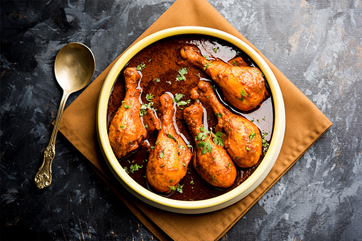
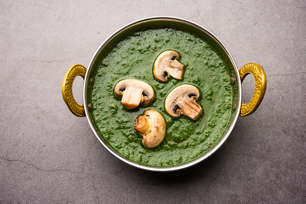
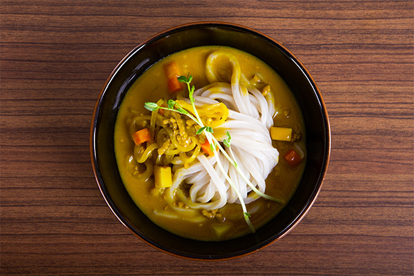

チキンカレー
みんな大好き！チキンの旨みが優しく沁みる定番カレー
チキンカレーは、鶏肉を主成分としたカレーで、様々な地域で異なるスタイルが存在します。具体的な味や辛さはレシピによって異なります。
ほうれん草のカレー
栄養たっぷり！緑が鮮やかで食欲をそそるヘルシーカレー
ほうれん草のカレーは、栄養価が高く、さっぱりとした味わいが特徴です。お好みで辛さを調整したり、他の野菜や豆類を加えてアレンジすることもできます。
カレーうどん
日本の味！温かいスープが寒い日にぴったりのジャパニーズカレー
カレーうどんは、日本のカレーとうどんを組み合わせた料理です。カレーのスパイシーさとうどんのもちもちした食感が絶妙にマッチした一品です。
